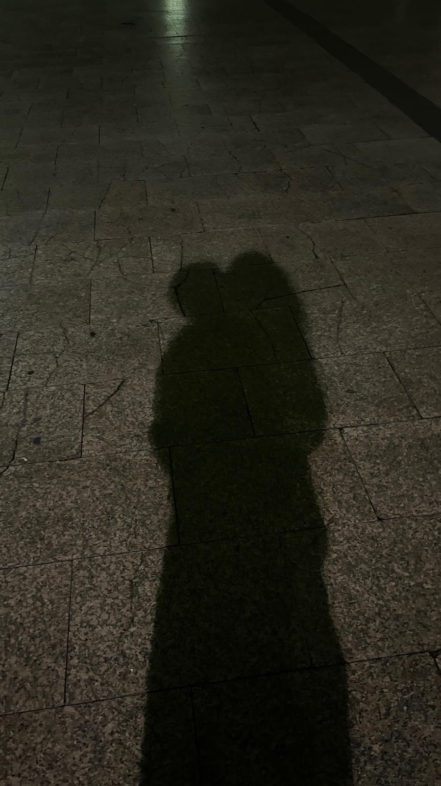
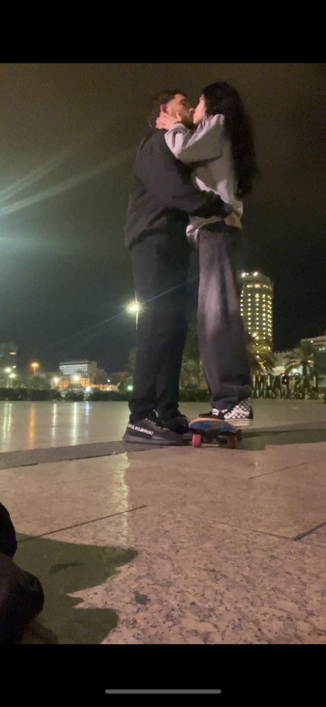
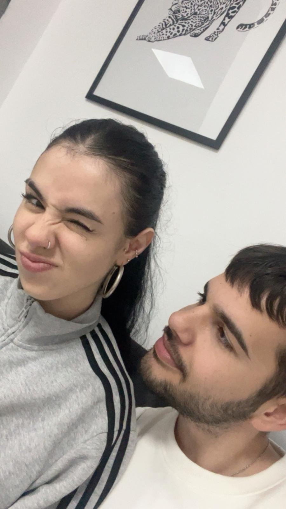
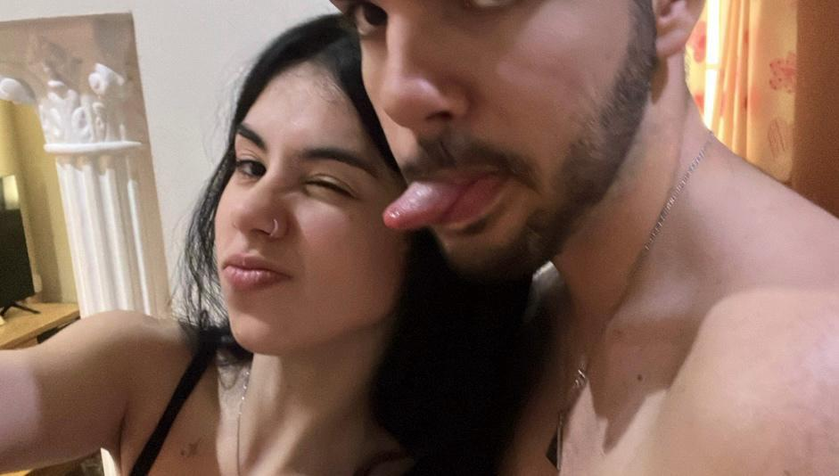
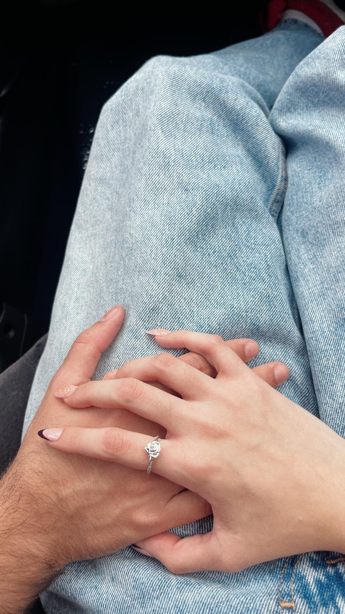
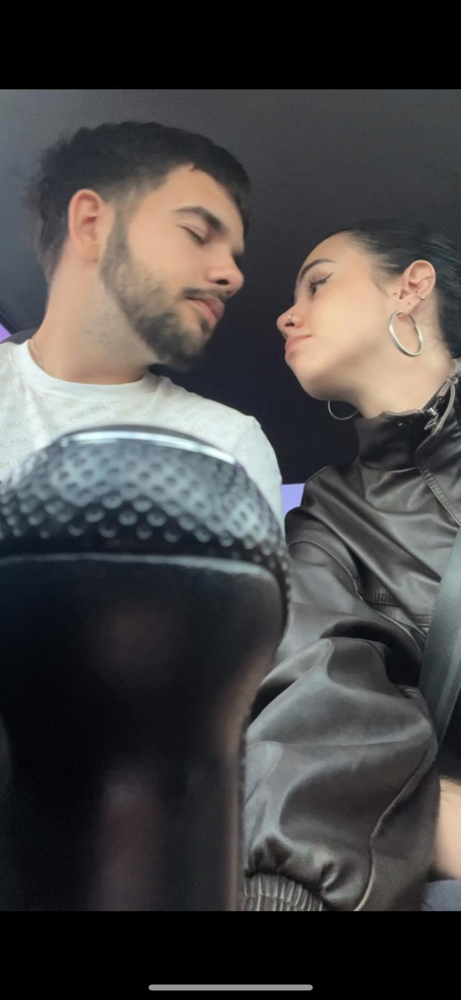
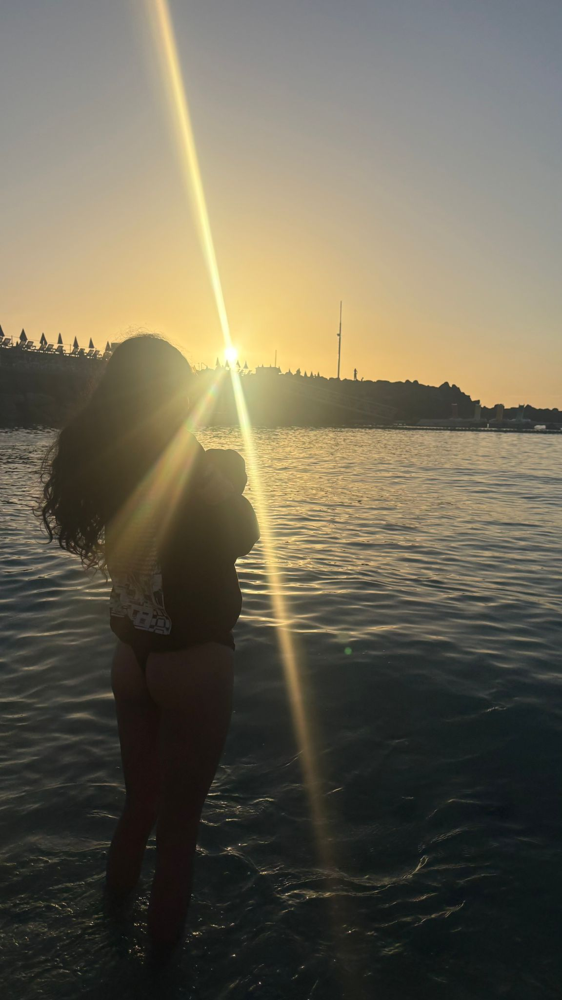
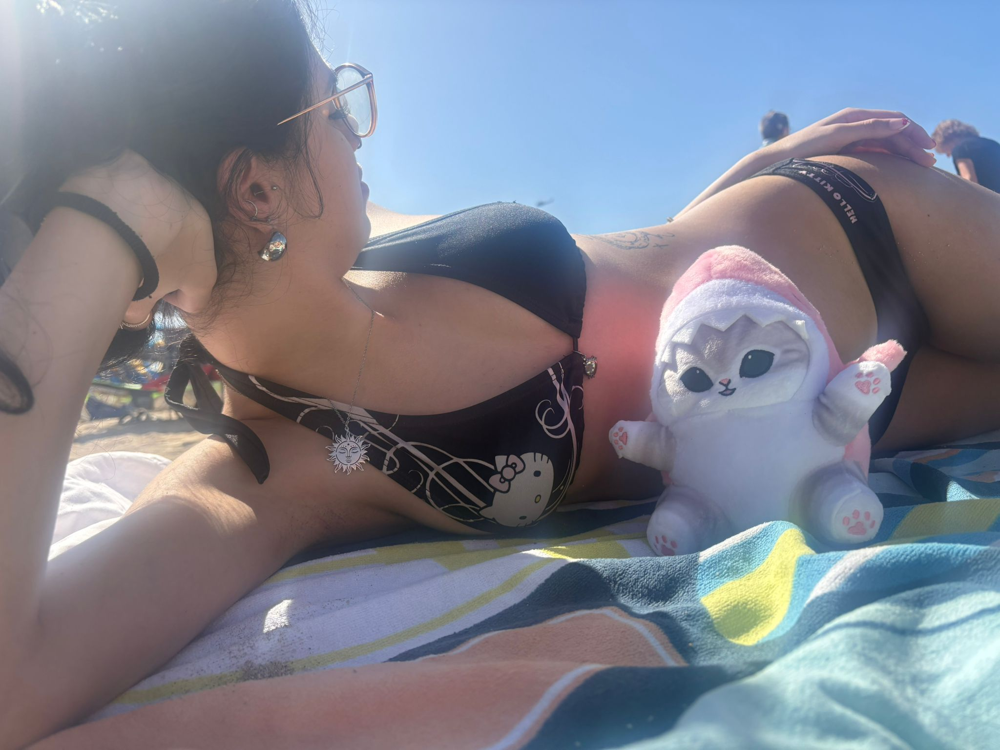
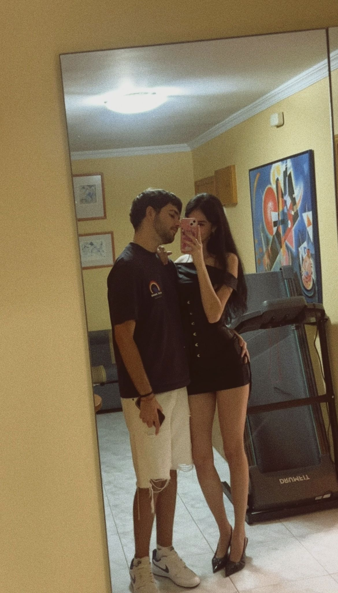
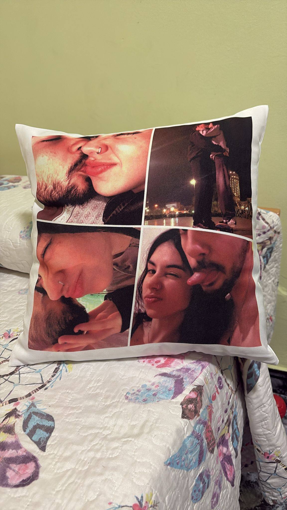

Gáname al 3 en raya 💖
Si me ganas, desbloqueas tu mensajito sobre nuestros 9 meses ✨
Nuestros meses de relación
- 27/10/2025 Nuestro primer beso y el empezar.
- 27/11/2025 Nuestro primer mes no oficial.
- 27/12/2025 Nuestra confirmación en el parque Sur (Un dia genial).
- 27/01/2026 Nuestro primer mes de relación (Recreando el primer día).
- 14/02/2026 Un día maravilloso en la playa de Amadores (Aunque el novio fastidio el final del dia 😢)
- ---------- Hacía tiempo que no actualizaba la página la verdad y eso que hay cosas para actualizar preciosidad...
- 27/03/2026 Ya hace 5 meses desde que empezo nuestra pequeña historia de amor, y cada vez soy mucho más feliz.
- 27/04/2026 6 MEEEEEEES, MEDIO AÑO QUE LOCURA LO RAPIDO QUE SE PASA EL TIEMPO AMOOOOOOR, TE AMOOOO MUCHO, Soy el novio con mas suerte del mundo por tenerte
- 27/07/2026 9 MEEEEEEES, Joe niño si es verdad que el tiempo pasa rápido y cada vez estoy mas convencido de que eres la persona adecuada para mí. que eres mi otra mitad y que eres la persona mas especial del mundo. PD: Te amo mucho MI PRINCESA❤️ PDx2: Soy el novio mas suerte del mundo x2
- 27/10/2026 12 MEEEEEEES, mejor dicho 1 AÑOOOOOO, es nuestro aniversario princesa, fuy a verte a Italia mi amor y tuvimos una semanita muy muy romantica mi vida linda eres la cosa más especial del mundo cuida muchos a nuestros hijitos y a nuestro nuevo hijo pinguuuuu quiero que sepas que eres la persona mas especial del mundo y que te amo con locura este es nuestro primer año de muchos muchoos muchooooooooos, lo vamos a recordar toda nuestra vida y se lo vamos a conar a nuestros hijos lo bien que nos lo pasamos mi amor te amo mucho guapa ❤️ PDx3: Soy el novio mas suerte del mundo x3
- ../../20.. Los días/meses/años que nos quedan de experiencias (Te quiero mucho).
Galería









Y esta es mi preciosa carta de San Valentín
Esta carta es para recordarte que no solo eres mi novia, que eres la persona que quiero ver todos los dias, con la cual sueño toda las noches y en un futuro mi esposa.
Estos casi 4 meses han sido los mejores de mi vida, y como te digo cada vez que te escribo una carta, espero que esto dure para siempre, eres una de las pocas personas que me hacen feliz dia a dia, aunque tengamos nuestros encontronazos y nuestras complicaciones/discurciones.
Gracias por cada detalle, cada mensaje bonito (aunque aveces eres un poco borde (es broma (te quiero))), cada momento que me haces reir y cada expresion bonita que tienes conmigo, gracias por escucharme y por comprenderme (no siempre (es broma (no me quite las custodia de mis hijos)))).
No tengo regalos, flores, cosas para agradecerte todo lo que haces por mi aunque creas que es poco es lo más bonito que alguien haya hecho por mi.
Y ahora me toca recibir un poco a mi, aunque este es el primer San Valentin que disfruto acompañado por una magnifica persona como tú, por mi culpa lo termine fastidiando, te pido perdon y te prometo que te lo compensare, quiero que sepas que eres lo más especial de mi vida y quiero que te pase todo lo mejor del mundo.
Por último y no menos importante te quiero decir 2 cosas:
1. Te quiero mucho, y quieros que sepas que siempre te querre
2. Espero tenerte para el resto de mi vida y que nada ni nadie nos separe, siempre tendras un hueco en mi corazon porque te lo has ganado.
Te quiero mucho amor, eres lo más bonito que he visto, feliz San Valentin ❤️.
El regalo que me hiciste ❤️:

El regalo que te hice ❤️:
NO HAY FOTO PORQUE NO LE SACASTE....................

13 razones por las que te amo
- Porque siempre estas cuando te necesito.
- Porque me escuchas cuando estoy mal.
- Porque te preocupas por mi.
- Porque contigo el tiempo se me va volando.
- Porque gracias a ti encontre la felicidad.
- Porque contigo todo es más facil.
- Porque sabes perdonarme.
- Porque sabes tratarme bien y cuidarme.
- Porque sabes darme cariño a mi y a mi barra de pan.
- Por apoyarme en los momentos que estoy mal y darme todo el cariño del mundo.
- Porque vas a ser la futura madre de mis hijos.
- Porque cada mes que pasamos, veo más claro, que eres la persona con la que quiero pasar el resto de mi vida.
- Por todo eso y por mucho más te quiero y siempre te querre.
Elige cuál es tu regalo sorpresa
Solo puedes abrir uno de los dos regalos, elige bien mi amor.
Hay una opción bonita y otra opción con un tono más elevado.
Y no te robo más tiempo amor, pero una cosa más.
Gracias por existir y por compartir tu tiempo conmigo.